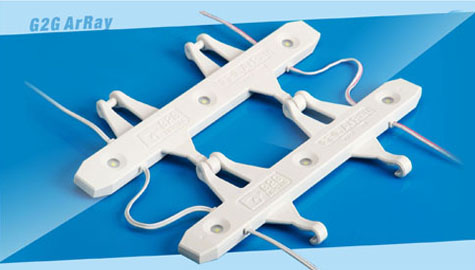
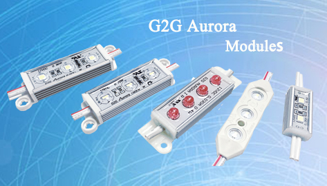

<div id="news" class="news margit-top110">
	<div class="container">
		<div class="news-title public-title">
			<h3>Our News</h3>
			<span></span>
			<p>
				Laterst News and Events about our company.To see the dynamic of us.
			</p>
		</div>
		<div class="news-grids">
			<div class="news-grids-left">
				
			</div>
			<div class="news-grids-right">
				<span>26 March 2014</span>
				<h4>Sign Box Products</h4>
				<p>G2G ArRay system is a new revolution in sign lighting. It offers substantial opportunities to reduce energy consumption and maintenance costs in applications where a high quality sign box lighting replacement is required. G2G ArRay is designed for
					double sided box and cabinets with 8 inch depth and over.</p>
			</div>
		</div>

		<div class="news-grids">
			<div class="news-grids-left left-text">
				<span>2 February 2012</span>
				<h4>New Aurora module</h4>
				<p>On space March 1st, we will publish the new Aurora series module, Aurora Mini into US market.</p>
			</div>
			<div class="news-grids-right right-img">
				
			</div>
		</div>
		<div class="news-grids">
			<div class="news-grids-left">
				
			</div>
			<div class="news-grids-right">
				<span>6 November 2011</span>
				<h4>USSC show on Dec 1,2 and 3</h4>
				<p>In 2011, Sign World Int'l will be held on December 1, 2, and 3 in Atlantic City, NJ. We will see you in booth 612.
					<br>http://www.ussc.org
				</p>
			</div>
		</div>
	</div>
</div>